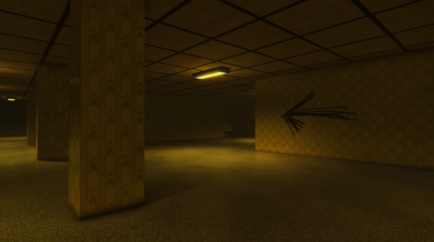
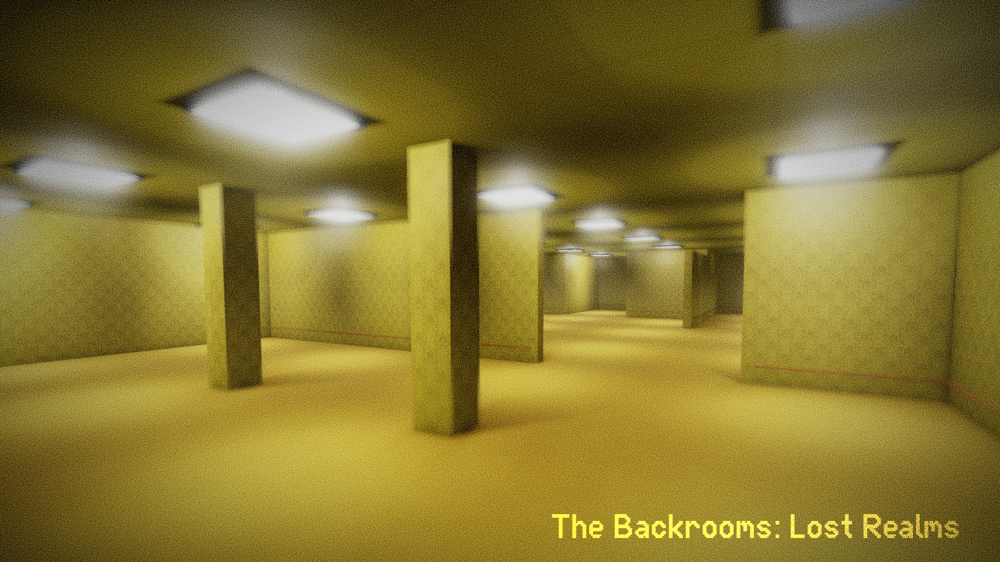

Works on programming behind the scenes.
Specializing in web development since 2022.
My timezone is currently UTC+2.

The Apeirophobia Wiki
The official Apeirophobia Wiki, designed to let
Apeirophobia players discover more information about the game
instead of the experience they have been given
while playing the game themselves, so this community wiki
has been created in order to fulfill that role.

The Backrooms: Lost Realms
Trapped in an endless labyrinth of yellow walls
and flickering lights, you must navigate a disorienting maze
where each corridor looks the same. Evade lurking entities,
solve cryptic puzzles, and cling to your sanity as
you search for a way out. Think you can survive?